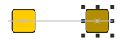
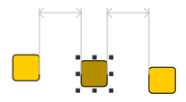
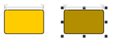
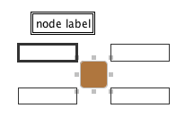
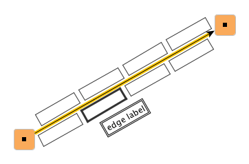

| User Interaction | ||
|---|---|---|
| Prev | Chapter 6. Displaying and Editing Graphs | Next |
In terms of the Model-View-Controller (MVC) paradigm, the controller part is the tie between the model and the view. It handles the user interaction and accordingly changes state of both model and view.
All mouse-based user interaction is handled by class
ViewMode and its descendants.
See below for a detailed description of class
ViewMode.
The term "mouse-based" summarizes simple mouse clicks as well as more complex
gestures that denote, e.g.:
and its descendants.
See below for a detailed description of class
ViewMode.
The term "mouse-based" summarizes simple mouse clicks as well as more complex
gestures that denote, e.g.:
Figure 6.50, “ViewMode class hierarchy” shows the hierarchy of class ViewMode featuring a subset of its descendants.
Editing a graph is most naturally done using the mouse, but keyboard input is
equally important, e.g., to change a label's text, to delete selected graph
elements, or to quickly select nodes or edges.
Class Graph2DViewActions provides a set
of default keyboard actions that can be conveniently installed with a
Graph2DView.
Example 6.38, “Installing default keyboard actions with a Graph2DView” presents the single line needed
to accomplish this.
provides a set
of default keyboard actions that can be conveniently installed with a
Graph2DView.
Example 6.38, “Installing default keyboard actions with a Graph2DView” presents the single line needed
to accomplish this.
Example 6.38. Installing default keyboard actions with a Graph2DView
// 'myView' is of type y.view.Graph2DView. new Graph2DViewActions(myView).install();
Customized keyboard actions can easily be registered with a Graph2DView object using the Java Swing classes ActionMap and InputMap. Figure 6.51, “Using ActionMap and InputMap” depicts their interaction with the view and with Graph2DViewActions.
The set of default keyboard actions provided by Graph2DViewActions can be conveniently retrieved readily encoded in ActionMap and InputMap objects, respectively. See Example 6.39, “Registering keyboard actions” for the necessary steps to get the default keyboard actions, to add further actions to the set, and then register them altogether with the view.
Example 6.39. Registering keyboard actions
public void registerSimpleZoomKeyboardActions(Graph2DView view) {
Graph2DViewActions actions = new Graph2DViewActions(view);
// Create the maps to hold the actions.
ActionMap aMap = actions.createActionMap();
InputMap iMap = actions.createDefaultInputMap(aMap);
// Add custom keyboard actions to the maps.
// Connect 'zoom in' action to num pad '+' key.
iMap.put(KeyStroke.getKeyStroke(KeyEvent.VK_ADD, 0), "ZOOM IN");
aMap.put("ZOOM IN", new Zoom(1.2));
// Connect 'zoom out' action to num pad '-' key.
iMap.put(KeyStroke.getKeyStroke(KeyEvent.VK_SUBTRACT, 0), "ZOOM OUT");
aMap.put("ZOOM OUT", new Zoom(0.8));
// Register the maps with the canvas component of 'view.'
view.getCanvasComponent().setActionMap(aMap);
view.getCanvasComponent().setInputMap(JComponent.WHEN_FOCUSED, iMap);
}
The built-in label editor directly provided by class Graph2DView can be opened in-place, i.e., at the label's location, or at any other suitable place in the view. It supports single-line as well as multi-line labels.
Using the callback mechanism provided by interface PropertyChangeListener notifications for label change events and text change events are easily realized.
Method
getTextLocation from abstract class YLabel
from abstract class YLabel delivers the
proper location for the label editor to appear in-place, i.e., where the actual
label resides.
Note that the location where the label editor should open is given in world
coordinates rather than view coordinates.
delivers the
proper location for the label editor to appear in-place, i.e., where the actual
label resides.
Note that the location where the label editor should open is given in world
coordinates rather than view coordinates.
Customization of label text editing in a view is supported by inner class Graph2DViewActions.EditLabelAction ,
which is registered with the view as a keyboard action,
by default.
,
which is registered with the view as a keyboard action,
by default.
Among other things, PopupModeDemo.java demonstrates the usage of Graph2DView's label editor.
Interface NodeCellEditor enables the use
of JComponents as editors for node-related data.
It behaves similar to Java Swing interfaces such as
TableCellEditor or
TreeCellEditor, and serves as a callback for the view
mode descendant class CellEditorMode.
enables the use
of JComponents as editors for node-related data.
It behaves similar to Java Swing interfaces such as
TableCellEditor or
TreeCellEditor, and serves as a callback for the view
mode descendant class CellEditorMode.
The following method of NodeCellEditor is called by CellEditorMode to initiate node editing using the returned JComponent:
JComponent getNodeCellEditorComponent(Graph2DView view, NodeRealizer context, Object value, boolean isSelected) |
|
| Description | Callback method of interface NodeCellEditor. Parameter 'value' holds the value of the cell to be edited, i.e., the actual node-related data that is presented in the JComponent. |
See the section called “Class CellEditorMode” for a description of the view mode that enables node editing using node cell editors. Tutorial demo application SwingRendererDemo.java shows how NodeCellEditor implementations can be created using Java Swing's abstract class AbstractCellEditor as a convenient basis.
Class ViewMode provides the base
functionality to handle mouse-based interaction that happens in a view.
User-generated mouse events like, e.g., a mouse button press, release, or mouse
drag with one of the buttons down are received and processed by appropriate
methods.
provides the base
functionality to handle mouse-based interaction that happens in a view.
User-generated mouse events like, e.g., a mouse button press, release, or mouse
drag with one of the buttons down are received and processed by appropriate
methods.
Processing mouse events in class ViewMode has two faces to it. First of all, there are "low-level" methods from the implementation for Java Swing interface MouseInputListener. Then there are additional, but more high-level and application-oriented methods available. The former methods convey actual mouse events that use view coordinates, while the latter ones directly use coordinates from the model, i.e., they are already converted to world coordinates.
View modes can be "chained," i.e., one view mode can yield control to another, which is referred to as a "child mode" in this context. Yielding control to a child mode means setting it as the active child mode, which is done using appropriate methods from class ViewMode. The child mode (or simply "child") then proceeds processing mouse events and after it is done returns control to its parent mode (its "parent"). Note that a view mode can have at most one active child mode at any time. The following methods can be used to get both the parent and the child of a view mode.
The term "child mode" is just another name for a view mode that is used in a specific context, namely view mode chaining. In particular, every child mode is a proper view mode that can be used on its own, i.e., without the need for a "parent mode."
ViewMode getChild() |
|
| Description | ViewMode methods to get the parent and child modes. |
View modes are added to respectively removed from a view using the following methods of Graph2DView:
void addViewMode(ViewMode vm) |
|
| Description | ViewMode-related methods from class Graph2DView to add and remove a view mode to the canvas. |
To provide convenient notification support class ViewMode offers the following methods to add implementations of interface PropertyChangeListener. The listeners are notified whenever one of the view mode's properties changes, most notably when the view mode gets activated or deactivated or when it enters or leaves editing state. Other property changes that are also signaled include, e.g., a view mode's usage as a child mode or as a parent mode.
| Property change support | |
| API | void addPropertyChangeListener(PropertyChangeListener pcl) |
| Description | Methods to add and remove property change listeners to a view mode. |
A view mode's editing state characterizes whether the view mode currently processes some user interaction. This property is appropriately updated by all predefined view modes and should also by any customized variant. The following methods support getting and setting the editing state:
boolean isEditing() |
|
| Description | Getter and setter methods for a view mode's editing state. |
Notifications about view mode property changes complement the notification mechanism that signals property changes relating to a graph's visual representation. Registering listeners with view modes provides qualified information about both beginning and ending of any mouse-based user interaction while listeners that receive Graph2DEvent objects are continuously notified during the interaction.
Among all ViewMode descendants class
EditMode takes the most prominent role.
It is the major mode that serves as the entry point for mouse events from the
view.
By default, it has a number of child modes associated, each of which
specialized in handling mouse gestures within a specific context.
Table 6.17, “Specialized view modes associated with class EditMode” lists all of class EditMode's child modes.
takes the most prominent role.
It is the major mode that serves as the entry point for mouse events from the
view.
By default, it has a number of child modes associated, each of which
specialized in handling mouse gestures within a specific context.
Table 6.17, “Specialized view modes associated with class EditMode” lists all of class EditMode's child modes.
Table 6.17. Specialized view modes associated with class EditMode
| Classname | Description |
|---|---|
| CellEditorMode | Can be registered to handle node editing. See also the section called “Class CellEditorMode”. |
| CreateEdgeMode |
Handles edge creation including the creation of control points. Any node ports present at start node or end node are taken into account. Edge creation does also cover aborting the process of creating an edge. Provides special support for orthogonal edge paths and interactive snapping of graph elements. |
| HotSpotMode |
Handles node resizing. Provides special support for orthogonal edge paths and interactive snapping of graph elements. See also the section called “Class HotSpotMode”. |
| MouseInputMode | Delegates mouse input to so-called mouse input editors using double precision mouse events. See the section called “Interface MouseInputEditor” for a description of the mouse input editor concept. |
| MoveLabelMode |
Handles node and edge label moving and triggers the presentation of label position candidate boxes. Provides special support for interactive snapping of labels. See also the section called “Class MoveLabelMode”. |
| MovePortMode |
Handles moving the port of an edge at the same node. Any node ports present at a node are taken into account. Provides special support for interactive snapping of graph elements. |
| MoveSelectionMode |
Handles moving a collection of selected graph elements. Provides special support for orthogonal edge paths and interactive snapping of graph elements. |
| MoveViewPortMode |
Handles moving the viewport. |
| OrthogonalMoveBendsMode |
Provides support for moving bends and edge segments in such a way that an edge's path is always orthogonal. Provides special support for orthogonal edge paths and interactive snapping of graph elements. |
| PopupMode |
Handles context-sensitive menus. |
| SelectionBoxMode |
Handles creating a rectangular box in the view and changes the selection state of graph elements contained in that box. |
| MoveNodePortMode |
Handles moving a node port at a node. |
Depending on the given context, class EditMode delegates the processing to the appropriate child mode by chaining it, i.e., setting it as the active child mode.
Chaining of another view mode is done as outlined in Example 6.40, “Chaining another view mode” using one of the following methods. These methods are vital to chaining view modes, among other things, they are responsible for:
| View mode chaining support | |
| API | void setChild(ViewMode child, MouseEvent pressEvent, MouseEvent dragEvent) |
| Description | Child mode methods from class ViewMode. |
To provide the child mode with a well-defined state for its start, the most current mouse events are handed over in canonical order, i.e., press, drag, and release. All further mouse events are then received by both parent and child, but processed only by the child mode.
View modes rely on a contract regarding the mouse events they are given at startup. While the mouse release event, or both mouse drag and mouse release event can be null, there must always be given a valid mouse press event.
After processing is completed, the child mode returns control to its parent
invoking its
reactivateParent() method.
Note that this method uses the reference to the parent that has been set before
by the chaining mechanism.
If no parent is set, then calling the method has no effect.
method.
Note that this method uses the reference to the parent that has been set before
by the chaining mechanism.
If no parent is set, then calling the method has no effect.
Example 6.40. Chaining another view mode
public void mousePressedRight(double x, double y)
{
// 'lastPressEvent,' 'lastDragEvent,' and 'lastReleaseEvent' are of type
// java.awt.event.MouseEvent
// NB: These are protected fields of class y.view.ViewMode
// Create a new instance of the specialized view mode and set it the active
// child of this view mode.
if (canMoveSelection)
// Hand over the most current last mouse events so that the child mode
// starts with a well-defined state.
setChild(new MoveSelectionMode(),
lastPressEvent, lastDragEvent, lastReleaseEvent);
}
Class EditMode and its associated child modes provide special support for orthogonal edge paths. Specifically, the following edge-related mouse gestures offer specialized behavior for this kind of paths:
Additionally, the following mouse gestures, which have an impact on edge paths, too, also offer specialized behavior:
The following method can be used to activate the specialized behavior for all edges of the graph across EditMode and its involved associated child modes (except CreateEdgeMode, see the section called “Support for Orthogonal Edge Paths”):
In contrast, when only a specific set of edges should have orthogonal edge path
support activated, then either a data provider can be registered with the graph
using the look-up key
ORTHOGONAL_ROUTING_DPKEY , or the
following callback method can be overridden.
Both the data provider and the callback method serve to indicate whether a
given edge's path is orthogonal or not.
This indication is conveyed using a boolean value.
, or the
following callback method can be overridden.
Both the data provider and the callback method serve to indicate whether a
given edge's path is orthogonal or not.
This indication is conveyed using a boolean value.
protected boolean isOrthogonalRouting(Edge e) |
|
| Description | Allows to specify the set of orthogonal edges. |
Note that, except CreateEdgeMode, which can be set up using the following methods, the involved child modes, too, access the data provider registered using the aforementioned look-up key.
boolean isOrthogonalEdgeCreation() |
|
| Description | CreateEdgeMode's methods to control orthogonal edge path support. |
OrthogonalMoveBendsMode, MoveSelectionMode, HotSpotMode, and CreateEdgeMode further complete the support for orthogonal edge paths by the setRemovingInnerBendsEnabled method, which removes all bends that lie inside the bounds their edge's end nodes.
OrthogonalEdgeViewModeDemo.java demonstrates the support for orthogonal edge paths provided by EditMode and CreateEdgeMode.
The associated child modes of class EditMode provide special support for interactive snapping of graph elements, which means visual and also "perceptible" feedback during a mouse move gesture when graph elements
Specifically, the following mouse gestures offer specialized behavior:
Figure 6.56, “Visual feedback during mouse move gestures with snapping support enabled” illustrates the visual feedback that is given during mouse move gestures.
Figure 6.56. Visual feedback during mouse move gestures with snapping support enabled
|

|

|

|
| Two nodes aligned at their center coordinates (moving a node). | Equidistant between two nodes (moving a node). | Same widths (resizing a node). |
During a mouse move gesture, the "perceptible" feedback can be experienced as
Such "coordinates of interest," i.e., where a node that is currently being moved and some other node(s) are aligned, for example, are called snap lines.
The support for interactive snapping of graph elements can be conveniently enabled on class EditMode. By default, the snapping then covers alignment, equidistance, and same widths/heights.
void setSnappingEnabled(boolean snapping) |
|
| Description | Convenience to enable snapping support. |
Further snapping behavior can be configured using the properties of the particular child modes that provide snapping support. Preferred distances between graph elements, for example, can be specified using the snap context of classes MoveSelectionMode, MovePortMode, and OrthogonalMoveBendsMode. The snap context can be retrieved through the getSnapContext method.
void setNodeToNodeDistance(double dist) |
|
| Description | Specifying preferred distances between graph elements. |
Support for interactive snapping of graph elements is further completed by class
DropSupport , which also handles a mouse move
gesture.
, which also handles a mouse move
gesture.
In addition to the default set of snap lines that result from the graph elements
themselves, custom snap lines can be created and added using the SnapLine class.
class.
Tutorial demo application SnapLineDemo.java shows how snapping support is set up using the properties of the child modes. The demo also shows how to create and add a custom snap line.
Class MoveLabelMode is a specialized view
mode that handles the mouse gesture for moving labels of graph elements.
is a specialized view
mode that handles the mouse gesture for moving labels of graph elements.
Depending on the label model that is associated with a label being moved, MoveLabelMode additionally renders available label position candidate boxes that the label can be snapped to, or provides special support for interactive snapping of labels. The latter means visual and also "perceptible" feedback (see also the section called “Support for Interactive Snapping of Graph Elements”) during the move gesture when the label
If the associated label model is a "free" label model, there is nothing rendered in addition.
Figure 6.57. Additional renderings provided by MoveLabelMode
|

|

|
| Label position candidate boxes outside of a node for a node label that uses label model NodeLabel.CORNERS. | Label position candidate boxes for an edge label that uses RotatedSliderEdgeLabelModel. |
 |
 |
| Snap lines for a node label with label model SmartNodeLabelModel. | Snap lines for an edge label with label model SmartEdgeLabelModel. |
At the end of the gesture, on mouse release, MoveLabelMode lets the label snap to its new position. This is either one of the candidate boxes, or a position defined by a snap line, or the current position of the mouse. In effect, MoveLabelMode takes care that the label position after the move gesture is in accordance with the label's associated model.
Note that SmartNodeLabelModel and SmartEdgeLabelModel
and SmartEdgeLabelModel actually allow the same freedom as "free" label models, i.e., the label is allowed
to take on any position.
The optional special support for interactive snapping of labels in conjunction with
these label models just provides a guidance for the user to better achieve certain
aligned positions.
actually allow the same freedom as "free" label models, i.e., the label is allowed
to take on any position.
The optional special support for interactive snapping of labels in conjunction with
these label models just provides a guidance for the user to better achieve certain
aligned positions.
By default, support for interactive snapping of labels is disabled. It can be enabled using:
void setSnappingEnabled(boolean snapping) |
|
| Description | Enables label snapping support. |
The snapping behavior can be configured using the snap context returned by the following getter method:
Tutorial demo application SmartLabelModelDemo.java shows how view mode MoveLabelMode can be configured to support label snapping with label models SmartNodeLabelModel and SmartEdgeLabelModel.
Class HotSpotMode is a specialized view
mode that handles the mouse gesture for resizing of nodes, more precisely
resizing the visual representation thereof.
is a specialized view
mode that handles the mouse gesture for resizing of nodes, more precisely
resizing the visual representation thereof.
The term "hotspot" is used for the knobs that are painted around a selected node. These knobs (sometimes also called "handles") can be used to change the node's width and height by means of a mouse drag gesture.
HotSpotMode provides several resize policies that affect the actual resizing
behavior.
Changing the resize policy can be done using the
setResizePolicy method.
method.
The default resize policy, in addition to the normal resizing behavior, also supports:
while dragging one of the hotspots of selected nodes.
When resizing, class HotSpotMode also respects minimum size and maximum size constraints if such information is provided by node realizers that are resized. See also the description for providing node size constraints for more details.
Furthermore, node resizing optionally also supports orthogonal edge paths and interactive snapping of graph elements.
Node resizing can be canceled by the user using the Escape key by default. Setting another cancel key can be done using:
Class NavigationMode provides a
convenient alternative to move the viewport so that it shows another part of
the model.
Instead of using the scroll bars, the clipping is changed by dragging the mouse
around the view.
While NavigationMode is active no direct mouse interaction with graph elements
is possible, i.e., all mouse events involving the left button are consumed for
changing the viewport.
provides a
convenient alternative to move the viewport so that it shows another part of
the model.
Instead of using the scroll bars, the clipping is changed by dragging the mouse
around the view.
While NavigationMode is active no direct mouse interaction with graph elements
is possible, i.e., all mouse events involving the left button are consumed for
changing the viewport.
Note however, that NavigationMode's associated child mode (class
PopupMode ) still provides a way of
indirectly manipulating graph elements via the items from the presented popup
menu.
) still provides a way of
indirectly manipulating graph elements via the items from the presented popup
menu.
Class CellEditorMode is a view mode
descendant that bridges the gap between general mouse-based user interaction
with elements in the view and specialized node-related editing capabilities
that are provided by means of NodeCellEditor implementations.
(See Node-Related Editing Capabilities for
a detailed description of node cell editors.)
is a view mode
descendant that bridges the gap between general mouse-based user interaction
with elements in the view and specialized node-related editing capabilities
that are provided by means of NodeCellEditor implementations.
(See Node-Related Editing Capabilities for
a detailed description of node cell editors.)
For example, if registered with a view's EditMode instance, this specialized view mode is invoked whenever a so-called "edit node gesture" for a node that has a NodeCellEditor associated is recognized. (The default edit node gesture that is recognized by class EditMode is a mouse double-click on a node.) CellEditorMode then retrieves the actual NodeCellEditor implementation that is associated with the node, and initiates node cell editing by installing the JComponent which is returned by that node cell editor as the node's editor.
Figure 6.59, “Class CellEditorMode's context” depicts the interrelations of CellEditorMode.
CellEditorMode is also responsible for mapping from nodes to both node cell editors and the objects that are used to hold the node-related data. The constructors of class CellEditorMode listed below can be used to instantiate this view mode so that it either
The DataMap parameter is used to provide the mapping from nodes to corresponding Objects that hold the node-related data which are presented in a JComponent.
CellEditorMode(NodeCellEditor nodeCellEditor, DataMap userObjectMap) |
|
| Description | A single NodeCellEditor implementation is shared for all nodes. |
CellEditorMode(DataProvider nodeCellEditorProvider, DataMap userObjectMap) |
|
| Description | The data provider is queried for the NodeCellEditor implementation of a given node. |
The tutorial demo application SwingRendererDemo.java shows how CellEditorMode is used as a child mode of class EditMode to initiate node editing with different NodeCellEditor implementations.
Class MagnifierViewMode is a view mode
that provides a magnifying glass "tool" which enables convenient local zooming
in a Graph2DView.
The magnifying glass follows the mouse movement and supports mouse wheel
zooming.
Additionally, the radius of the circle where the zoom applies can be changed
using the mouse wheel, too.
is a view mode
that provides a magnifying glass "tool" which enables convenient local zooming
in a Graph2DView.
The magnifying glass follows the mouse movement and supports mouse wheel
zooming.
Additionally, the radius of the circle where the zoom applies can be changed
using the mouse wheel, too.
Example 6.41, “Registering a MagnifierViewMode” demonstrates how to configure and install MagnifierViewMode concurrently with other view modes. Among other things, this means that interaction with graph elements as provided by these view modes is still possible while the magnifying glass is active.
Example 6.41. Registering a MagnifierViewMode
// 'view' is of type y.view.Graph2DView. MagnifierViewMode magnifierMode = new MagnifierViewMode(); magnifierMode.setMagnifierRadius(100); magnifierMode.setMagnifierZoomFactor(2.0); view.addViewMode(magnifierMode);
MagnifierViewMode is shown in tutorial demo application MagnifierViewModeDemo.java.
Class AutoDragViewMode is a view mode
that provides support for automatically scrolling the current view when the
cursor is moved outside of the view's bounds during a mouse drag gesture.
In particular, this covers the following mouse gestures:
is a view mode
that provides support for automatically scrolling the current view when the
cursor is moved outside of the view's bounds during a mouse drag gesture.
In particular, this covers the following mouse gestures:
Example 6.42, “Registering an AutoDragViewMode” shows how AutoDragViewMode is registered with a view.
Class TooltipMode is a view mode that provides
tooltip support for all kinds of graph elements:
is a view mode that provides
tooltip support for all kinds of graph elements:
By default, tooltips for nodes and edges are enabled and the text of the first node label and first edge label, respectively, is displayed.
If TooltipMode is used in parallel to EditMode, which also provides tooltip support, however, only for nodes and edges, then to avoid any interferences only the tooltip functionality of TooltipMode should be used.
Tooltip generation can be easily customized by subclassing TooltipMode and overriding the getter methods that return the actual tooltip text for a given graph element.
protected String getNodeTip(Node node) |
|
| Description | Getter methods (callbacks) that return the tooltip text for a given graph element. |
The following code shows how a customized TooltipMode that returns alternative HTML tooltips can be registered with the view:
Example 6.43. Registering a customized TooltipMode that generates HTML tooltips
// 'view' is of type y.view.Graph2DView.
// Register a customized TooltipMode with the view.
view.addViewMode(new TooltipMode() {
// Returns the HTML code for a label that nicely formats the number of a
// node's incoming and outgoing edges.
protected String getNodeTip(Node n) {
String text = "<html><table><tr>";
text += "<td rowspan=\"2\"><em>Edges</em></td>";
text += "<td align=\"right\"><b>" + n.inDegree() + "</b></td>";
text += "<td align=\"left\"><em>Incoming</em></td>";
text += "</tr><tr>";
text += "<td align=\"right\"><b>" + n.outDegree() + "</b></td>";
text += "<td align=\"left\"><em>Outgoing</em></td>";
text += "</tr></table></html>";
return text;
}
// Returns HTML code for a label that nicely prints the number of an edge's
// bends.
protected String getEdgeTip(Edge e) {
EdgeRealizer er = view.getGraph2D().getRealizer(e);
String text = "<html><table><tr>";
text += "<td align=\"right\"><b>" + er.bendCount() + "</b></td>";
text += "<td align=\"left\"><em>Bends</em></td>";
text += "</tr></table></html>";
return text;
}
});
Class HitInfo is responsible for collecting
and storing hit-testing information on graph elements (i.e., nodes and edges), their
labels, and further parts of graph elements like node ports, ports, and bends.
It uses the reverse of the rendering order as established by
graph renderers that implement interface
OrderRenderer
is responsible for collecting
and storing hit-testing information on graph elements (i.e., nodes and edges), their
labels, and further parts of graph elements like node ports, ports, and bends.
It uses the reverse of the rendering order as established by
graph renderers that implement interface
OrderRenderer for traversing the graph
elements, and by default only takes into account visible elements when
collecting the information.
for traversing the graph
elements, and by default only takes into account visible elements when
collecting the information.
HitInfo objects use world coordinates and optionally return only the first element or all elements at the given coordinates. Of particular importance when only the first element should be returned is the hit-testing precedence which is applied when collecting the information. The default precedence is:
This precedence can easily be changed. Alternatively, using the following constructor hit-testing can also be performed for a specified graph element type, i.e., only for nodes or only for edges, for example. The type of graph element is specified using the constants defined in class HitInfo.
HitInfo(Graph2DView view, double x, double y, boolean firstHitOnly, int type) |
|
| Description | HitInfo support for hit-testing only a specified graph element type. Optionally returns all hit graph elements of the specified type. |
Using a HitInfo object is straightforward. Following a mouse event within a view, the event's coordinates are translated to world coordinates with which a HitInfo object can be instantiated. This object then collects and stores all elements that are at the given coordinates. Single elements as well as sets of elements can afterwards be queried using HitInfo's getter methods. Figure 6.61, “Class HitInfo's context” shows class HitInfo and its context.
In order to change the hit-testing precedence for a single view mode, the getter method can be customized as shown in Example 6.44, “Customizing HitInfo precedence in the context of a single view mode”.
Example 6.44. Customizing HitInfo precedence in the context of a single view mode
public class MyEditMode extends EditMode {
protected HitInfo getHitInfo(double x, double y) {
// Instantiate a HitInfo object that collects only the first node at the
// given coordinates.
HitInfo hi = new HitInfo(view, x, y, true, HitInfo.NODE);
// Set the most current HitInfo object to the one just created.
setLastHitInfo(hi);
// Return the HitInfo object.
return hi;
}
}
Class HitInfo is aware of grouped graphs and accordingly uses the visiting order defined with the HierarchyManager object that governs a given graph.
A mouse input editor, i.e., an implementation for interface
MouseInputEditor , is a consumer of mouse
events that happen in the view.
It enables convenient mouse-based interaction with arbitrary elements such as
node realizers and edge realizers, but also implementations of interface
Drawable.
A mouse input editor allows to receive and process mouse events with double
precision world coordinates.
, is a consumer of mouse
events that happen in the view.
It enables convenient mouse-based interaction with arbitrary elements such as
node realizers and edge realizers, but also implementations of interface
Drawable.
A mouse input editor allows to receive and process mouse events with double
precision world coordinates.
The mouse input mode that is active with a view's EditMode instance can be
configured to forward mouse events using class
Mouse2DEvent whenever the current mouse
coordinates are above elements that have such a mouse input editor associated.
whenever the current mouse
coordinates are above elements that have such a mouse input editor associated.
Abstract class AbstractMouseInputEditor serves as a base class implementation for interface MouseInputEditor that
already provides convenient support for state change listeners.
The tutorial demo applications
serves as a base class implementation for interface MouseInputEditor that
already provides convenient support for state change listeners.
The tutorial demo applications
show how AbstractMouseInputEditor can be used to create custom mouse event consumers in the context of Drawable and NodeRealizer implementations, respectively.
The predefined EditMode offers default behavior that can be modified in various ways using, e.g., setter methods to allow or disallow certain mouse gestures, or callback methods to completely change specific aspects of user interaction. Among the things that can be disallowed, are, e.g., node and edge creation, node resizing, and bend creation. Furthermore, class EditMode's behavior can also be modified by exchanging any of its child modes with customized variants.
Example 6.45, “Customizing edge creation” is an excerpt from CreateEdgeModeDemo.java, a tutorial demo application that shows how to customize an EditMode by exchanging one of its specialized view modes.
Example 6.45. Customizing edge creation
public class EvenOddCreateEdgeMode extends CreateEdgeMode {
public boolean isEven(Node n) {
try {
return (Integer.parseInt(getGraph2D().getLabelText(n)) % 2 == 0);
}
catch (Exception ex) {
return true;
}
}
// Accept the given node as source for an edge if its label is an even number.
protected boolean acceptSourceNode(Node source, double x, double y) {
return isEven(source);
}
// Accept the given node as source for an edge if its label is an odd number.
protected boolean acceptTargetNode(Node target, double x, double y) {
return !isEven(target);
}
}
public class CustomizedEdgeModeDemo extends ViewActionDemo {
public CreateEdgeModeDemo() {
// Register a customized CreateEdgeMode version.
editMode.setCreateEdgeMode(new EvenOddCreateEdgeMode());
}
}
A customized view mode that is also used for view mode chaining should be designed to return control to its parent in a well-behaved manner. More precisely, the call to reactivate a parent should occur after a mouse release event has been processed. The call should never occur such that the parent receives a mouse drag or mouse release event as the first event.
For further view mode customization examples see the tutorial demo applications:
|
Copyright ©2004-2015, yWorks GmbH. All rights reserved. |